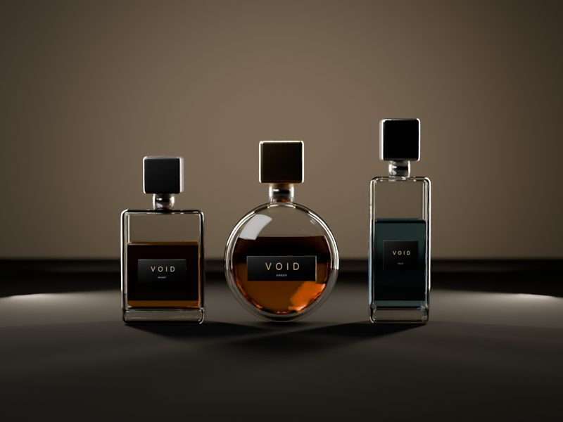
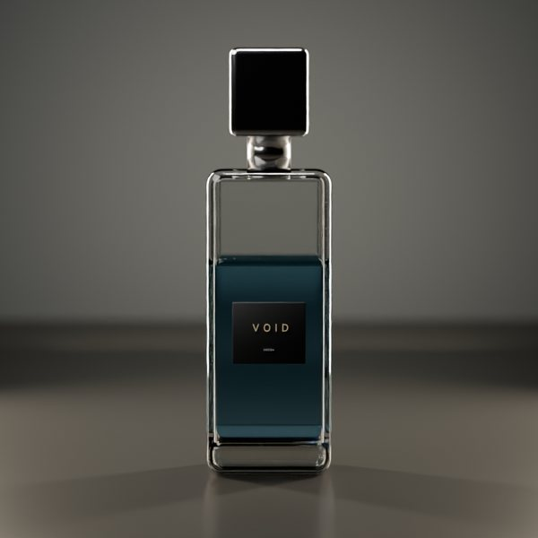

EDT чи EDP: у чому різниця
Концентрація олій, стійкість і шлейф — коротко.
Парфумерія VOID

Концентрація олій, стійкість і шлейф — коротко.

Теплі амброві та пряні композиції для холодних днів.

Чому ванна — найгірше місце для флакона.
На зап'ястя, шию та за вуха — там шкіра тепліша, і аромат розкривається краще.
Так, це називається лейеринг. Почніть з двох ароматів одного сімейства.
Суха шкіра гірше тримає аромат — спробуйте нанести його після зволожувального крему.